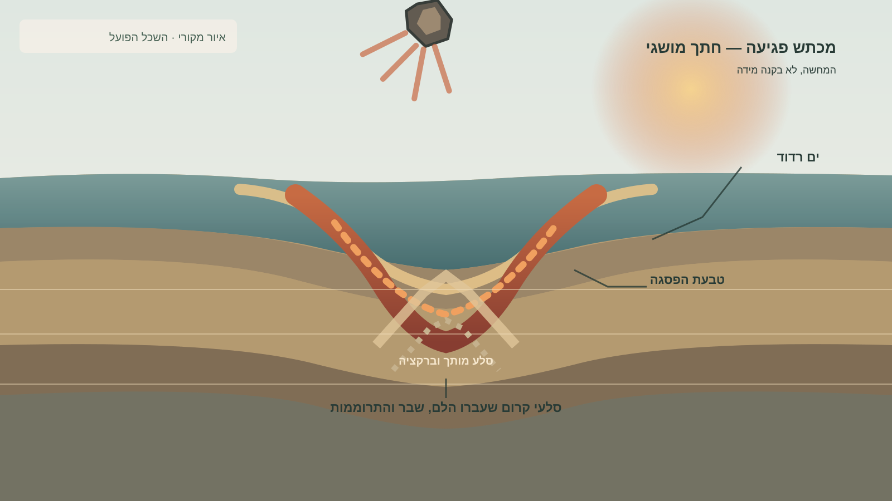
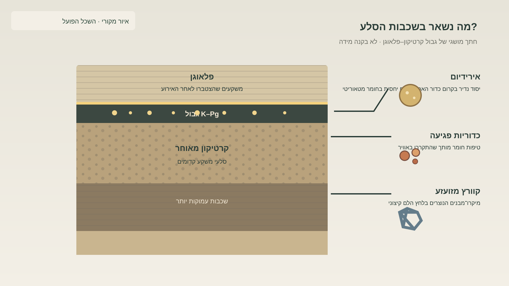

גאולוגיה · אסטרונומיה · אבולוציה
המכתש שנולד בתוך דקות והמשיך לבעבע מיליון שנה
בחצי האי יוקטן שבמקסיקו אין היום מכתש ענקי שאפשר לעמוד על שפתו ולהביט פנימה. המבנה שקבר את עידן הדינוזאורים הלא־עופות מסתתר מתחת לסלעי משקע, לים ולנוף טרופי. ובכל זאת, מתחת לפני השטח נשמר תיעוד מפורט של רגע שבו כוכב לכת שלם שינה מסלול: אסטרואיד פגע, הקרום התרומם והתמוטט, האוקיינוס הסתער פנימה, והאקלים נכנס למשבר. הסיפור המפתיע הוא שהמכתש לא נשאר רק קבר של עולם שנעלם. החום שהותיר אחריו יצר מערכת תת־קרקעית שייתכן שאירחה חיים מיקרוביאליים במשך מיליוני שנים.

הראיה התחילה בשכבה דקה של יסוד נדיר
הסיפור המדעי של צ'יקשולוב לא התחיל במכתש, אלא באנומליה כימית. ב־1980 פרסמו הפיזיקאי לואיס אלווארז, בנו הגאולוג וולטר אלווארז, והכימאים פרנק אסארו והלן מישל מאמר בכתב העת Science. הם מדדו ריכוז חריג של אירידיום — יסוד נדיר יחסית בקרום כדור הארץ אך שכיח יותר בחומר מטאוריטי — בשכבות סלע שסימנו את גבול הקרטיקון והפלאוגן, לפני כ־66 מיליון שנה. הממצא הופיע באתרים מרוחקים באיטליה, בדנמרק ובניו זילנד. החוקרים הציעו שאבק שנפלט מפגיעת גוף קוסמי התפזר באטמוספירה ושקע ברחבי העולם. זו הייתה השערה נועזת: לא שינוי אקלים איטי, אלא אירוע קצר ואלים יכול היה להסביר את ההכחדה.
המאמר המקורי, Extraterrestrial Cause for the Cretaceous-Tertiary Extinction, לא סיפק עדיין את מיקום הפגיעה. הוא הציע מנגנון והוליד תחזית שאפשר לבדוק: אם אכן פגע אסטרואיד גדול, חייב להימצא מקום שבו נוצר מכתש מתאים, ובשכבות הגבול אמורים להופיע גם סימני הלם מינרלוגיים. בהמשך נמצאו ברחבי העולם גרגרי קוורץ שעברו עיוותים מיקרוסקופיים אופייניים ללחץ קיצוני וכדוריות זעירות שנוצרו מחומר מותך. אלה אינן ראיות זהות, ולכן כוחן מצטבר: כימיה, מינרלוגיה וגאולוגיה מצביעות על אותו סוג אירוע.
במקביל, גיאופיזיקאים שחיפשו נפט עבור חברת הנפט המקסיקנית Pemex זיהו בשנות השבעים חריגות מגנטיות וכבידתיות מעגליות מתחת ליוקטן. גלן פנפילד ואנטוניו קמארגו הציגו את הנתונים ב־1981, אך הקישור בין המבנה הקבור לבין ההכחדה התבהר רק לאחר שחוקרים השוו דגימות קידוח עם שכבות הגבול. ב־1991 פרסמו הילדברנד ועמיתיו את הזיהוי של מבנה פגיעה בקוטר של כ־180 קילומטרים. המאמר בכתב העת Geology הפך את צ'יקשולוב למועמד המרכזי, ובהמשך למכתש המזוהה עם אירוע ההכחדה.
מה עושה פגיעה של גוף בקוטר עשרה קילומטרים?
האסטרואיד שפגע באזור יוקטן היה כנראה בקוטר של כעשרה קילומטרים, ונע במהירות של עשרות קילומטרים בשנייה. מחקרי סימולציה וגאופיזיקה מציעים מסלול פגיעה תלול יחסית, בזווית של כ־45 עד 60 מעלות ביחס לפני השטח, מכיוון צפון־מזרח. זו אינה מדידה ישירה של מסלול שנצפה, אלא שחזור מתוך האסימטריה של המבנה התת־קרקעי והשוואתה למודלים ממוחשבים. האנרגיה שהשתחררה נאמדת בסדר גודל של (10^{23}) ג'ול — מספר שקשה לתרגם לדימוי יומיומי, אך הוא מסביר מדוע מדובר באירוע פלנטרי ולא באסון מקומי.
ברגע הפגיעה, הלחץ והחום לא יצרו פשוט קערה עגולה. תחילה נוצר חלל זמני עמוק, והסלעים שמתחת לנקודת הפגיעה נדחסו, נמסו והועפו. לאחר מכן הקרום המוחלש התרומם בעוצמה, ואז התמוטט החוצה ופנימה. התהליך הזה יצר מבנה שנקרא טבעת פסגה — רכס מעגלי בתוך המכתש, המורכב מסלעים שהועלו מעומק רב ונשברו. זהו אחד הקשרים המעניינים בין צ'יקשולוב לפיזיקה של כוכבי לכת: אותו סוג של מכניקה מסביר מכתשים גדולים גם בירח, במאדים ובכוכבי לכת סלעיים אחרים. מכתש גדול הוא לא רק חור בקרקע; הוא תיעוד של תגובת הקרום כולו לגל הלם.
המודלים אינם תחליף לסלעים עצמם. בשנת 2016 קדחה משלחת משותפת של התוכנית הבינלאומית לחקר האוקיינוסים IODP ושל התוכנית הבינלאומית לקידוח מדעי יבשתי ICDP אל תוך טבעת הפסגה, והגיעה לעומק של יותר מקילומטר מתחת לקרקעית הים. הקידוח חשף גרניט שבור ומעוות, סלעי התכה ושברי סלעים שנוצרו בפגיעה. זהו מקרה נדיר שבו אפשר לבדוק תחזיות של פיזיקה חישובית באמצעות ליבה ממשית של קרום פלנטרי. סיכום משלחת 364 מתאר כיצד הדגימות נועדו להבין לא רק את צורת המכתש, אלא גם את החום, זרימת המים והאפשרות לקיום חיים מתחת לפני השטח.

האסון לא היה הפיצוץ — אלא מה שבא אחריו
הפגיעה הרסה אזורים עצומים בתוך דקות, אך ההכחדה העולמית נבעה בעיקר משרשרת תגובות סביבתיות. סלעי קרבונט וגופרית באזור הפגיעה התאדו או התפרקו, חומר מותך ואבק הועפו לגובה, ושריפות נרחבות הוסיפו פיח לאטמוספירה. אבק, פיח ואירוסולים של גופרית הפחיתו את כמות אור השמש שהגיעה לפני השטח. התוצאה הייתה תקופה של קירור, ירידה במשקעים והפרעה לפוטוסינתזה — התהליך שבו צמחים ואצות ממירים אור לאנרגיה כימית.
ההבחנה הזאת חשובה: האסטרואיד לא היה צריך להרוג כל בעל חיים ישירות. די היה בכך שיפגע בבסיס של רשתות המזון. ביבשה נפגעו צמחייה ויערות; בים נפגעו אוכלוסיות של פלנקטון פוטוסינתטי, שמהוות בסיס למערכות אקולוגיות עצומות. כאשר היצרנים הראשוניים נפגעים, ההשפעה מטפסת במעלה שרשרת המזון: אוכלי הצמחים מאבדים מזון, אחריהם הטורפים, ובמערכות ימיות משתנים גם מחזורי הפחמן והחומרים המזינים. סקירה ב־Nature Reviews Earth & Environment מסכמת שהפגיעה בצ'יקשולוב הייתה כמעט בוודאות הגורם המרכזי להכחדת סוף הקרטיקון, אך מדגישה שמשך "חורף הפגיעה" — חודשים רבים או יותר מעשור — עדיין אינו מוכרע לחלוטין.
הקשר הלא־מובן מאליו כאן הוא בין אסטרונומיה לאקולוגיה של מערכות. גוף שמגיע מן החלל משנה בתוך שעות את תנאי התאורה, הטמפרטורה והמשקעים; מכאן הוא משנה את זמינות האנרגיה בכל המערכת הביולוגית. המנגנון דומה מבחינה מבנית לקריסה של רשת אספקה: פגיעה בצומת בסיסי אחד מתפשטת לרכיבים שתלויים בו, גם אם הם רחוקים מאוד ממקום הפגיעה. מחקר אקלימי משנת 2020 מצא שבתרחישים שנבדקו, פיח משריפות רחבות היקף היה מסוגל להוריד את האור מתחת לסף הנדרש לפוטוסינתזה במשך חודשים רבים, בעוד שאבק וגופרית תרמו לקירור ולצמצום המשקעים. אלה תוצאות של מודל, לא מדידה ישירה של כל יום באותה תקופה, אך הן מספקות מנגנון פיזיקלי לתבנית ההכחדה.
האם הרי הגעש בהודו היו שותפים לאסון?
צ'יקשולוב לא פעל בחלל ריק. באותה תקופה התרחשו בהודו התפרצויות עצומות שיצרו את מדרגות הדקאן — מחוז של סלעי בזלת שנוצרו מזרמי לבה חוזרים. ההתפרצויות פלטו פחמן דו־חמצני וגופרית דו־חמצנית, והשפיעו על האקלים ועל הכימיה של האוקיינוסים. במשך שנים התנהל ויכוח אם הרי הגעש, האסטרואיד או שילוב ביניהם היו הגורם העיקרי להכחדה. הדיון אינו נפתר באמצעות בחירה בין "אירוע אחד" ל"שני אירועים": אפשר שהגעשיות החלישה מערכות אקולוגיות עוד קודם, ואילו הפגיעה הייתה המכה שהעבירה אותן מעבר לסף ההתאוששות.
מחקר משנת 2020 ב־PNAS שילב נתוני מאובנים עם מודלים אקלימיים ואקולוגיים, ומצא שתרחישי הפגיעה הצליחו ליצור פגיעה חמורה בבתי הגידול של הדינוזאורים, בעוד שתרחישי הגעשיות שנבדקו לא יצרו אותה תוצאה. החוקרים אף הציעו שהגעשיות המתמשכת יכלה למתן חלק מן ההשפעות לאחר הפגיעה. אין לקרוא זאת כהוכחה שכל תרומת הגעשיות הייתה חיובית או זניחה; מודלים תלויים בהנחות, וההשפעות השתנו לאורך זמן. אבל מכלול הראיות כיום תומך בפגיעה כגורם המכריע, לצד רקע סביבתי מורכב יותר.
מי שרד — ולמה?
הכחדת סוף הקרטיקון מחקה כשלושה רבעים מן המינים, ובכללם כל הדינוזאורים הלא־עופות. אבל היא לא יצרה עולם ריק. עופות, יונקים, תנינים, צבים, דו־חיים, דגים וקבוצות רבות של חסרי חוליות שרדו בדרכים שונות. ההישרדות לא הייתה תחרות פשוטה שבה "החזקים" ניצחו. כאשר יערות נפגעים, למשל, בעלי חיים התלויים בצמרות עלולים להיפגע יותר ממינים שחיים במחילות, על הקרקע או במים. מחקר על העדפות בית הגידול של יונקים מצא דפוס התואם הישרדות מוגברת של מינים שאינם תלויים בחיים על עצים, אם כי המחברים מדגישים שהרישום המאובני דל מכדי להפוך את המסקנה לחוק אוניברסלי.
גם עליית היונקים לא הייתה רגע קסום שבו נעלמו הדינוזאורים והיונקים תפסו את מקומם. היא הייתה תהליך אבולוציוני ממושך, שנמשך מיליוני שנים והושפע משינויים בצמחייה, באקלים, בתחרות ובאפשרויות המזון. מחקר מאובנים מ־2023 מצא עלייה במגוון היונקים לאחר ההכחדה גם בקרב מינים קטנים, ולא רק אצל בעלי חיים גדולים שתפסו נישות שהתפנו. כלומר, לא מדובר רק ב"ירושה" של שטח המחיה של הדינוזאורים, אלא בארגון מחדש של מערכות אקולוגיות ושל יחסי גומלין בתוכן.
הקשר לתורת האבולוציה עמוק יותר מסיפור ניצחון של קבוצה אחת. הכחדה המונית היא מסנן סביבתי: היא משנה אילו תכונות, בתי גידול ואסטרטגיות חיים נעשים בני־קיימא. לאחר מכן, הברירה הטבעית פועלת בתוך עולם שהשתנה. המינים ששורדים אינם בהכרח אלה שהיו "מוצלחים" בעולם הקודם, אלא אלה שתכונותיהם מתאימות במקרה לתנאים החדשים. ההיסטוריה האבולוציונית אינה מסלול מתוכנן לעבר האדם; היא תוצאה של אילוצים, מקריות והסתעפויות.
המכתש הפך גם לבית גידול
אולי הממצא המפתיע ביותר התגלה דווקא מתחת לאזור שבו התרחשה הפגיעה. האנרגיה העצומה חיממה את הסלעים, שברה אותם ויצרה חללים וסדקים. מי ים ומי תהום חדרו אל תוך הסלעים, התחממו, הגיבו עם מינרלים וחזרו לזרום. כך נוצרה מערכת הידרותרמית — מערכת של מים חמים הנעים דרך סלעים ומחליפים עמם חומרים. במחקר שפורסם ב־Science Advances ב־2020, החוקרים העריכו שהמערכת שינתה כימית ומינרלוגית נפח עצום של קרום כדור הארץ, ושפעילותה נמשכה יותר ממיליון שנה. בתחילתה נמדדו או שוחזרו טמפרטורות של מאות מעלות באזורים מסוימים.
מחקר נוסף מצא בסלעי המכתש סימנים איזוטופיים המעידים על פעילות של חיידקים מפחיתי סולפט — מיקרואורגניזמים שמפיקים אנרגיה מתגובות כימיות בסביבה דלת חמצן. זו אינה טענה שחיים מורכבים שגשגו בתוך הסלע הרותח, וגם לא שכל המערכת הייתה ראויה למגורים. מדובר בעדויות למיקרו־סביבות שבהן תנאי החום, המים והכימיה התאימו לחיים מיקרוביאליים, לאחר שהטמפרטורות ירדו לרמה נסבלת. מחברי המחקר העריכו שתנאים המתאימים לחיידקים חובבי חום יכלו להימשך לפחות כשני מיליון שנה.
כאן נפתח קשר לא צפוי לאסטרוביולוגיה — חקר האפשרות לחיים מחוץ לכדור הארץ. אם פגיעות גדולות יוצרות סלעים סדוקים, חום ממושך, מים זורמים ומקורות אנרגיה כימיים, ייתכן שמכתשים עתיקים על מאדים או על כדור הארץ הקדום סיפקו בתי גידול תת־קרקעיים בתקופות שבהן פני השטח היו קשים לחיים. זו אפשרות מחקרית, לא הוכחה שחיים נוצרו במכתשים. אבל היא משנה את האופן שבו אנו חושבים על אסונות קוסמיים: אותה פגיעה יכולה להרוס מערכות חיים על פני השטח ובו בזמן ליצור, עמוק מתחתיו, תנאים חדשים להתקיימותם.
מכתש צ'יקשולוב הוא לא רק סימן למוות של עולם. הוא גם מעבדה טבעית שמראה כיצד חומר, אקלים וחיים מגיבים לאירוע קיצוני — וכיצד אסון אחד יכול לייצר תנאים הפוכים במקומות שונים.
לקרוא את כדור הארץ כמו זירת אירוע
צ'יקשולוב מלמד שיעור גם על הדרך שבה מדע בונה ידע. איש לא צפה בפגיעה, ואין מצלמה שהקליטה את הרגע. במקום זאת יש שכבה דקה של אירידיום, גרגרי קוורץ מעוותים, כדוריות זכוכית, חריגות מגנטיות וכבידתיות, ליבות קידוח ומודלים של התנהגות סלעים. כל ראיה לבדה מוגבלת: אירידיום יכול להגיע ממקורות שונים; אנומליה כבידתית אינה אומרת בהכרח "מכתש"; מודל מחשב תלוי בהנחות. אבל כאשר קווי ראיות בלתי תלויים מתכנסים לאותו הסבר, הביטחון בו גדל. זו צורה של חשיבה פורנזית — שחזור אירוע מן העקבות שהותיר, תוך בדיקה אם הסבר אחד מתאים ליותר נתונים מן החלופות.
החידה עדיין אינה סגורה. המדענים ממשיכים לברר כמה זמן נמשך החושך, מה היה היחס המדויק בין פיח לגופרית, מדוע קבוצות מסוימות שרדו ואחרות לא, וכיצד התאוששו מערכות ימיות ויבשתיות בקצבים שונים. גם המבנה התת־קרקעי ממשיך להתגלות באמצעות קידוחים, מדידות סייסמיות וניתוח כימי. דווקא משום שהאירוע התרחש לפני עשרות מיליוני שנים, הוא מאפשר לבדוק כיצד כוכב לכת מתנהג תחת לחץ קיצוני — בלי שנצטרך לחוות ניסוי דומה בעצמנו.
במובן הזה, המכתש הוא ארכיון כפול. בשכבות שמעליו נשמרה עדות לקריסת מערכות החיים; בסלעים שמתחתיו נשמרה עדות לחום, למים ולמערכת מיקרוביאלית מאוחרת יותר. אותו אירוע היה קץ עבור מינים רבים, אך גם תחילתם של מסלולים אבולוציוניים וגאולוגיים חדשים. ההיסטוריה של כדור הארץ אינה סיפור של התקדמות חלקה, אלא של מערכות שנבנות, נשברות ומסתגלות — לעיתים בעקבות אירועים שאין להן דרך להתכונן אליהם.
חמישה דברים שכדאי לזכור
- מכתש צ'יקשולוב נוצר לפני כ־66 מיליון שנה מפגיעת אסטרואיד שקוטרו היה כנראה כעשרה קילומטרים.
- הקישור בין הפגיעה להכחדה נשען על כמה סוגי ראיות עצמאיים: אירידיום, קוורץ מזועזע, כדוריות פגיעה ומבנה גאופיזי תואם.
- הפגיעה הייתה כנראה הגורם המרכזי להכחדת סוף הקרטיקון, אך געשיות הדקאן השפיעה על האקלים והמערכות האקולוגיות בתקופה הסמוכה.
- הכחדה המונית אינה רק מחיקה של מינים; היא משנה את תנאי הברירה הטבעית ואת מסלולי האבולוציה של השורדים.
- החום שהותירה הפגיעה יצר מערכת הידרותרמית ממושכת, עם עדויות לפעילות מיקרוביאלית בסלעי המכתש.
שלוש שאלות למחשבה
- אם אירוע קוסמי קצר מסוגל לשנות את מסלול האבולוציה במשך מיליוני שנים, עד כמה נכון לדבר על "הצלחה" או "עליונות" של מין בטבע?
- האם העובדה שמכתשי פגיעה יכולים ליצור בתי גידול תת־קרקעיים משנה את האופן שבו כדאי לחפש סימני חיים על מאדים?
- מה נחשב הסבר מדעי משכנע יותר: ראיה אחת דרמטית, או התכנסות של כמה ראיות חלקיות שאינן תלויות זו בזו?
לקריאה נוספת
- Alvarez et al. (1980), Extraterrestrial Cause for the Cretaceous-Tertiary Extinction — המאמר שהציע את השערת הפגיעה על סמך חריגת האירידיום.
- Hildebrand et al. (1991), Chicxulub Crater — הזיהוי הגאולוגי של מבנה הפגיעה ביוקטן.
- IODP Expedition 364 — Expedition Summary — סיכום הקידוח אל טבעת הפסגה.
- Gulick et al. (2019), The first day of the Cenozoic — שחזור השעות והיום הראשון לאחר הפגיעה מתוך ליבת הקידוח.
- The Chicxulub impact and its environmental consequences (2022) — סקירה מדעית מקיפה של הפגיעה והשלכותיה.
- Chiarenza et al. (2020), Asteroid impact, not volcanism, caused the end-Cretaceous dinosaur extinction — השוואת תרחישי פגיעה וגעשיות באמצעות מודלים אקלימיים ואקולוגיים.
- Kring et al. (2020), Probing the Hydrothermal System of the Chicxulub Impact Crater — המערכת ההידרותרמית שנוצרה בעקבות הפגיעה.
- Kring, Whitehouse & Schmieder (2020), Microbial Sulfur Isotope Fractionation — עדויות לפעילות מיקרוביאלית בסלעי המכתש.
- Early Paleocene Paleoceanography and Export Productivity in the Chicxulub Crater (2021) — התאוששות הפרודוקטיביות הימית במכתש ובסביבתו.
הערת בחירה: הערך נבחר ידנית ולא באקראי, משום שגישת ההרצה ל־Wikipedia API החזירה שגיאת DisabledError. לכן אין כאן טענה שהנושא נשלף באקראי.